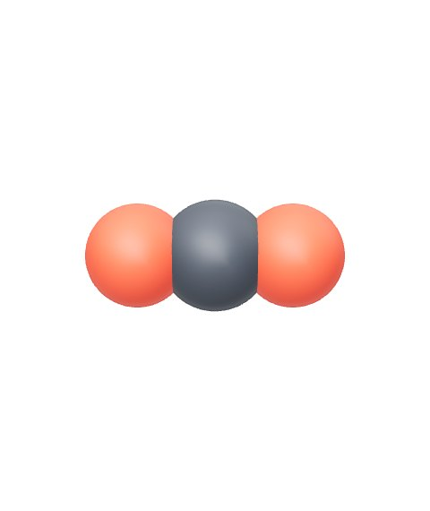
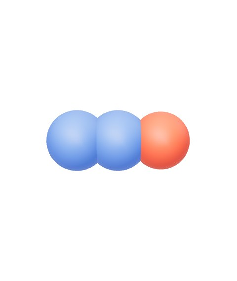
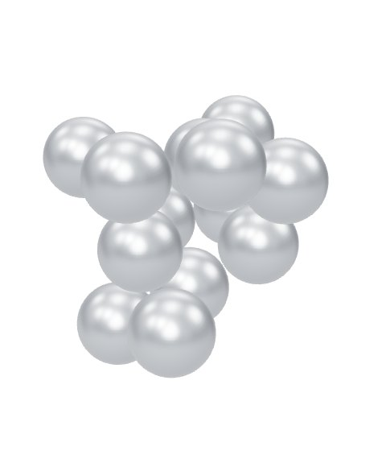
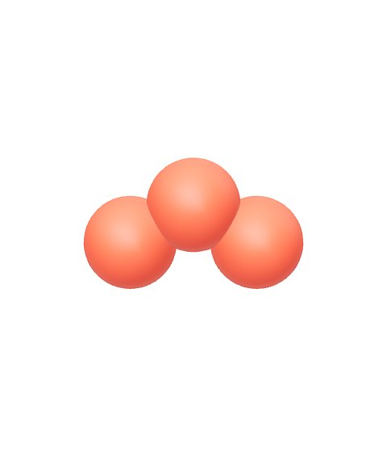

우리 삶의 중요한 터전인 지구는 여러 가지 물질로 구성되어 있으며 수많은 물질에 의해 환경적 영향을 받고 있어요. 다음은 지구 환경과 관련된 뉴스 제목이에요. 어떤 물질이 나오는지 찾아봐요.

한반도 이산화 탄소 농도 또 역대 최고이산화 탄소

질소 비료 과다 사용, 온실 기체인 아산화 질소 배출아산화 질소

중금속 포함된 공장 폐수 인근 하천에 무단 방류!중금속 (예: 수은)

‘오존’의 습격… “천식 위험 높아져”오존
최근 10년, 서울 오존 주의보 발령 일수 증가오존
그림 ① 교과서 158쪽 뉴스 제목 (숫자는 뺐어요. 입자 모형은 공개된 분자 3D 좌표로 그린 모형)
중금속은 여러 금속을 묶어 부르는 말이에요. 이 수업에서는 교과서 140쪽 원소 기호에 나오는 수은(Hg)을 예로 들어요.